Introduction
Over the last 10 years or so, the numbers of unmanned aerial vehicles (UAVs) or ‘drones’ have changed from being just a few specialist systems, used for scientific data gathering and military purposes, to them proliferating in huge numbers. They are used across a broad range of different leisure, commercial and military activities. UAVs can be used for the movement of items in factories for manufacturing, passenger and freight transportation, which can take various roles in the agriculture and forestry industries (dispensing seeds, watering and monitoring crops), remote sensing for the oil and gas industries, traffic flow monitoring, support of emergency services, hobbies, security, military and many other applications. This has come about due to the development of low-cost, high-performance stable platforms, employing equally low-cost communication and navigation systems supplemented by simple to use software and interfaces. As a consequence, there is a need to be able to monitor the rapidly changing use of airspace, especially at low and normally neglected altitudes to ensure that UAVs do not compromise safety or are used for malicious purposes. Radar is the only sensor that is able to perform this function on a 24-h, all-weather and wide-area basis. Hence, this book, concerned with radar surveillance of UAVs, has been compiled using contributions from the leading experts around the world to create a single body of knowledge on this important, yet still emerging, topic.
In this opening chapter a brief history of the development of UAVs, putting today’s explosive growth in numbers into the wider context, is outlined. It is not the intention to provide a comprehensive account of the development of all UAVs as this would require a separate and somewhat sizeable text. Here, some of the key milestones are noted as a means of the charting development that has led to the UAVs of today and why there is a need for specialist radar surveillance systems. Challenges facing successful radar surveillance both for countering UAVs and enabling their legitimate use are introduced and discussed. Further, the consequences associated with the way in which the occupancy of low-altitude airspace is changing are considered, especially in relation to how this may open up opportunities for a wider exploitation of radar surveillance. Lastly, some speculation as to future challenges for the radar surveillance of UAVs are presented and examined.
I.1 UAV development
The origins of unmanned flight can be traced back to around 400 BC with the ‘Chinese flying top’ during the Warring States period. The Chinese flying top, essentially, was a stick with a propeller on its top as illustrated in Figure I.1.
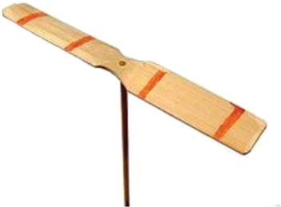
Figure I.1 The Chinese top
The propeller was spun round by hand and then released to make it fly. This would also make the first flying vehicle, both unmanned and a helicopter. Much later Leonardo da Vinci produced sketches of an ‘aerial screw’ in the late 1400s – see Figure I.2. This appears to take inspiration from the Archimedes screw, first espoused around 200 BC. Again, it has more in common with helicopters than conventional aircraft. da Vinci never made his sketch into a real flying machine and if he had, it, almost certainly, did not have the means to sustain flight other than fleetingly.
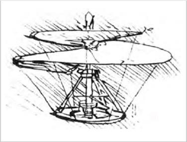
Figure I.2 The Leonardo da Vinci flying screw
Much later, in the eighteenth century the Russian polymath, Mikhail V. Lomonosov, produced and demonstrated to the Russian Academy of Sciences, what is thought to be the first self-propelled version of a flying screw, powered by a spring, Figure I.3.
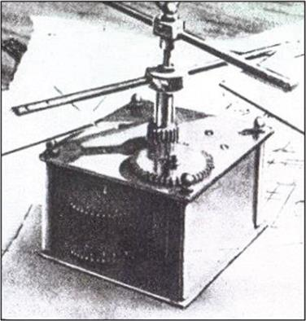
Figure I.3 The Lomonosov flying screw
In 1784, two Frenchmen, Launoy and Bienvenu, devised an ingenious flying machine consisting of two propellers made of birds' feathers fixed to the tips of a shaft, as shown in Figure I.4. Two strings were twisted around the shaft, tensioning a spring. As the assemblage was straightened out, the spring caused the propellers to rotate for a few seconds, sufficient to send the device spinning a few metres. Launoy and Bienvenu presented their invention to the French Academy of Sciences.
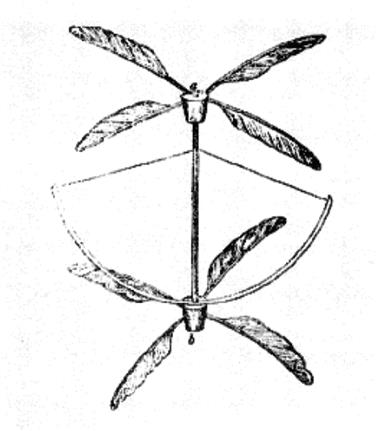
Figure I.4 The Launoy and Bienvenu flying helicopter
In the nineteenth century, in the United Kingdom, Sir George Cayley, an English engineer, was a key figure in the development of flight, setting out much of the basis of modern flight. In 1799, he outlined the concept that established the configuration of an aeroplane as a fixed-wing flying machine with separate systems for lift, propulsion and control. His initial sketches, such as that shown in Figure I.5, led to models, powered by elastic, that were able to demonstrate unaided flight. These early examples of flying machines are closer to the helicopter and the small unmanned quad and hexacopter aircraft of today.
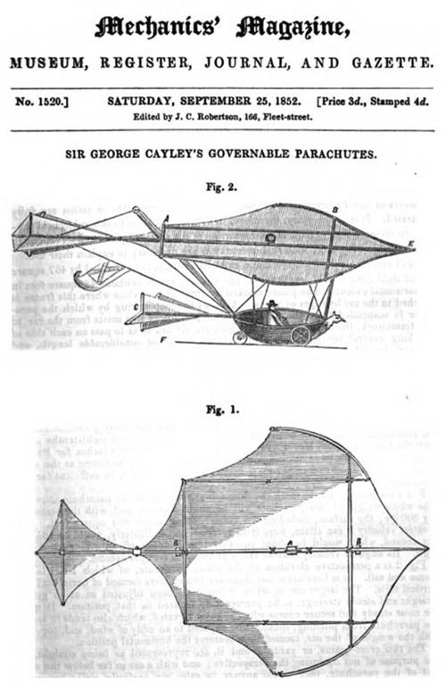
Figure I.5 Sir George Cayley’s sketches of a flying machine
In 1903, the Wright brothers made the first sustained, controlled, powered and heavier-than-air manned flight on 17 December 1903. The first flight by Orville Wright of 37 m lasted for 12 s, and in the fourth flight (of the same day) Wilbur Wright flew 260 m for a period of 59 s. Figure I.6 shows the Wright brothers aircraft, the Wright flyer, on 17 December 1903.
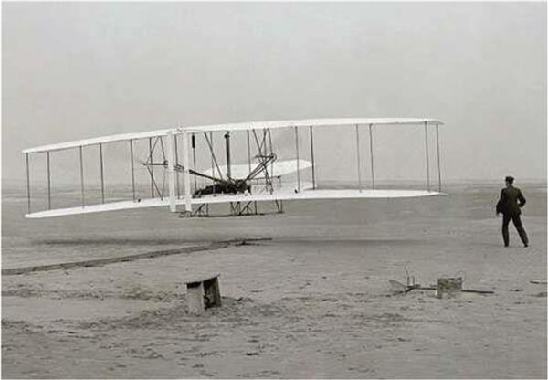
Figure I.6 The Wright flyer
Their success spurred the growth that has led to the modern aviation industry. Quickly after, there appeared remotely piloted aircraft, principally developed as a means of delivering bombs in the First World War. These flying machines split into two categories: one being the precursors to missiles, i.e., non-recoverable UAVs and the other, aircraft that were designed to return to base, i.e., UAVs. The latter were motivated by a desire to avoid the loss of an expensive aircraft and by the lack of suitably trained and available pilots. An early example of the missile category was the ‘Kettering Bug’, first flown in 1917 and shown in Figure I.7. It was constructed by Charles Kettering, who used a fuselage made by Orville Wright and a control and navigation system designed by Elmer Sperry. Following take-off, the aircraft was guided towards its target. After a predetermined elapsed time, the wings were folded down, the engine was switched off, and the aircraft fell from the sky in the form of a bomb. The Kettering Bug was never used as the war ended before it could be put into service.
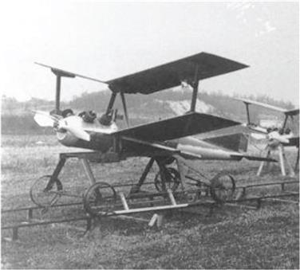
Figure I.7 The Kettering Bug
It was after the First World War that renewed interest in pilotless aircraft, motivated by the need to train gunners. The ‘Queen Bee’ was the first example, developed in the United Kingdom in 1935, that employed a remote-control system in a De Havilland DH 82 Tiger Moth. The gunners had to ‘offset-aim’ so that the Queen Bee could return and be reused. It is a curiosity that we have the term, ‘drone’, in common use today, given that the sole purpose of a drone, a male honey bee, is to impregnate the Queen Bee! Perhaps, it was the continuous buzzing of the aircraft that led to the adoption of ‘drone’ and well after the heyday of the pilotless Queen Bee? A number of theories for the term ‘drone’ coming into common use have been postulated but supporting evidence seems to be lacking (Figure I.8).
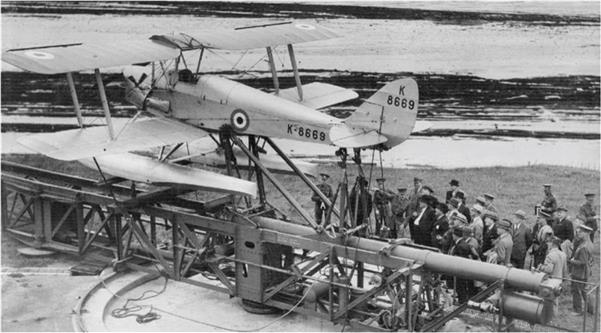
Figure I.8 The Queen Bee
Soon after, there followed many examples of similar remotely piloted or radio-controlled aircraft that were primarily used as targets for training purposes. Equally, there were parallel but separate developments leading to the modern missile.
In 1960, the advent of the ‘Reconnaissance UAV’ in the form of the BQM-34 Firebee was seen, as shown in Figure I.9. This UAV could be launched by catapult or from the ground or a ship but was most commonly launched from a DC-130 aircraft. In the Vietnam War, the Firebee carried out over 3,400 sorties helping to locate air defence batteries. In the 1970s, Israel was a leader of UAV technology, and two notable systems were Mastiff and Scout. These were used to gather information as to the location of radio emitters and their parameters. In the 1980s, the US furthered the development of UAVs in support of various conflicts. This led to the Pioneer, Predator and Global Hawk systems, which also eventually evolved armed combat versions such as the MQ-9 Reaper.
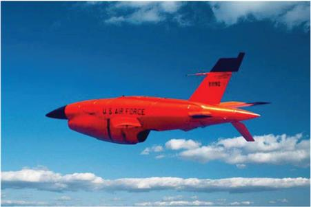
Figure I.9 The BQM-34 Firebee
In the latter part of these conflicts, there was a need for cheaper systems that could be more easily launched and were simple to use. These systems were powered by batteries and had camera payloads, the attributes of the modern commercially available UAV that can now be bought in stores anywhere. Examples include the AeroVironment Pointer, Figure I.10, which operated at altitudes of up to 150 m and had a range of around 8 km.
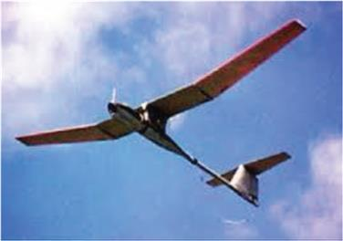
Figure I.10 The AeroVironment Pointer
More recently, the Black Hornet Nano, developed by Prox Dynamics AS of Norway, took the genre to new extremes – see Figure I.11. This is micro-unmanned aircraft with dimensions of, approximately, 10 by 2.5 cm, weighs a little over 16 g, incorporates a camera and can fit in the palm of a hand.
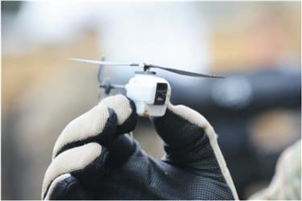
Figure I.11 The Black Hornet Nano
Thus, a number of terms have been almost interchangeably introduced and used for this wide variety of unmanned aircraft. The principle ones are drone, remotely piloted vehicle, Unmanned Air System (UAS), Uninhabited Air System (also UAS) and UAV. Here, we will primarily use UAV.
Starting with the Chinese flying top and arriving at the black hornet nano, it is easy to see that
- the capability and aerodynamic performance of UAVs has greatly improved;
- the ability to squeeze increasingly complex and capable payloads onto smaller and smaller platforms has dramatically increased;
- there is a tremendous variety of UAV types, with huge differences in size, weight, flight ability and application.
All these serve to pose significant challenges in ensuring reliable surveillance and safe use of airspace. Most of the early developments were pioneered for military applications. More recently, with costs reducing, UAVs started to be developed for scientific observation. However, the most dramatic developments have been over the last 10–15 years, and there is now the ability to create UAVs with remarkable performance in small packages. This has been brought about by the advent of high-speed digital processing, miniature high capability communications and IT coupled with sophisticated software for command and control, all at low cost. As a result, it is now possible to produce sophisticated small UAVs easily affordable by large tracts of the general public. Consequently, this has led to a massive level of proliferation that dwarfs anything seen before with UAVs now selling in their tens of millions all over the world. Around 20 different manufacturers hold most of the market with well-known names such as Parrott, DJI and Yuneec being especially prominent. Figure I.12 shows the DJI Phantom 4 PRO and Mavic quadcopter UAVs. The DJI phantom is physically small with an overall span of around 35 cm and a weight in the region of 1.3 kg. Although these UAVs are physically very small, they are able to carry a good quality camera and can support small additional payloads. Most of the UAV is made of plastic, with the exception of the battery and parts of the motor assemblies.
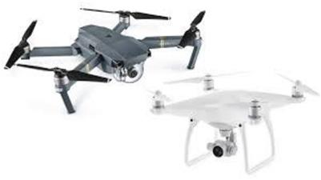
Figure I.12 The DJI Phantom 4 PRO and Mavic UAVs
It is these quadcopters, hexacopters and fixed-wing UAVs, produced in great numbers, that present a particular challenge for radar surveillance as they change the way in which low-altitude airspace is occupied.
I.2 Radar surveillance of UAVs
Essentially, small UAVs are flying batteries with plastic appendages and hence they present a very small radar cross section (RCS). The RCSs of these small UAVs are in the order of −20 to −30 dBsm, so tiny that they make stealthy aircraft appear positively enormous!! To detect such very small RCS targets, it is necessary to design a radar system with very high sensitivity. However, as the RCS of small birds can be of the same order as that of the UAVs, they will also be detected creating a confusing picture on a radar operator display. Information on the RCS of single birds is fairly scant but generally they are the same order as UAVs and there is a slight increase in RCS in moving from a transmission frequency of 1 GHz, upwards. Higher frequency radar systems are more sensitive to smaller RCS birds and are even able to detect swarms of insects. In fact, all moving targets with a similarly sized RCS, falling within the radar illumination, will be detected, including ground targets such as cars, people, animals and even items such as air-conditioning fans. This is further complicated by the need to detect UAVs to a given maximum range, such that the heightened sensitivity at shorter ranges means that smaller and smaller RCS targets may be detected at shorter and shorter ranges.
A second characteristic of small UAVs is that they tend to fly at low altitudes, typically at 100 m or below. Further, most UAVs are relatively slow-moving with maximum speeds of around 20 m/s and often lower if there is a prevailing headwind. As radar targets, UAVs are often said to be low, slow and small.
As a consequence of these three defining target attributes, radar systems have a number of challenges that directly arise, which are as follows:
- Detection of very small RCS targets against what can be a strong clutter background.
- Accurate extraction of location data, especially elevation in the presence of multipath.
- Reliability of tracking.
- Because so many different types of target are detected, there is a vital need for reliable classification.
- UAVs can be launched from anywhere and hence, they can ‘pop-up’ at short ranges, placing a premium on short reaction times.
Each of the challenges mentioned earlier will be considered in a little more detail, although, as will become clear, it is their combination that, ultimately, presents key new difficulties in designing radar systems that are able to provide reliable UAV surveillance.
The first requirement to be met in the design of any radar system is the assurance of an adequate signal to interference plus noise ratio. The interference may be in the form of clutter or other received electrical signals, either accidentally or deliberately. For larger RCS targets such as aircraft, this is likely to mean that the radar is insensitive to smaller air objects such as single or small numbers of birds and UAVs and it is typical that performance is noise rather than clutter limited at maximum range. However, as the target RCS becomes smaller and smaller, first, there has to be some compensating factor to maintain an adequate signal-to-noise ratio (SNR). The main options are increasing transmitter power, pulse length, antenna gains, PRF or a combination of these. Of course, there are all sorts of limits that might apply, particularly in relation to size, weight, power and cost, and ultimately the maximum detection range will be limited. The choice of frequency is a prime factor in any radar design. The optimum frequency for a UAV surveillance system is far from clear. Indeed, the literature reports systems working for a lower frequency of around 100 MHz to an upper frequency of 94 GHz, i.e., pretty well the whole of the spectrum used for radar!! The choice of antenna, especially in relation to gain and beam widths, will have a bearing not only on the SNR but also will be a factor in determining likely levels of clutter and multipath. Low-frequency systems are more likely to have wider beams that will intercept the ground introducing significant clutter. High-frequency systems may be able to avoid this but will have the usual problems at long detection ranges and in foul weather. It is also, generally, cheaper and easier to generate high powers at lower frequencies but this is traded for larger and potentially more cumbersome hardware. Whatever the radar design, the very small RCS of the targets means that the maximum detection ranges will be relatively short and even tens of km may not prove feasible.
Given that clutter is likely to be strong, detection in the Doppler domain has many attractions and is the method of choice reported in almost all most publications. A further motivation for this is the need for classification and the obvious exploitation of propeller sidebands, as a differentiator between UAVs and birds. However, the sidebands are of a much lower RCS than the main UAV body, then the criteria for adequate SNR become even more demanding. This might be as much as a further 20–30 dBs, making the radar sensitivity requirements even harder to achieve at long range. The relatively slow speeds and hence even slower radial velocities, as seen by a radar system, means that attention must be paid to the minimum detectable velocity so that the UAV is not filtered out for long periods making the maintenance of continuous tracking much more difficult.
Tracking is important as the different forms of trajectory type between birds and UAVs are also a valuable discriminator. Thus, even for a radar that has adequate SNR, the resulting probability of detection will be reduced when the UAV (or any target) is embedded in stationary clutter. Of course, as with all radar systems, clutter has internal motion due to wind, which broadens the clutter spectrum. This is a function of the local environment and prevailing environment and environmental conditions and can reduce the probability of detection still further.
A high Doppler resolution can provide a means of detecting targets as their radial velocity reduces but this has to be coupled with sophisticated signal processing to minimise the minimum detectable velocity. Equally, if the Doppler resolution is too high, the target Doppler signature can exhibit migration and hence spread energy into multiple resolution cells resulting in no improvement in detection performance. Overall, there has to be a careful balance between range, azimuth, elevation and Doppler resolutions that allows targets to be sufficiently separable in four-dimensional space, whilst being able to accumulate sufficient echoes the characteristics of which enable UAVs to be reliably detected and differentiated from birds and other small moving targets.
Accurate UAV position information is necessary for many applications that fall into counter-UAV or Air Traffic Management (ATM) categories. ATM regulations, as they develop, may well specify minimum separations between UAVs. Counter UAV technology may require the radar to perform broad area surveillance such that it hands over coordinates of a UAV location to an optical sensor. This will need to be accomplished with radar accuracies that enable the optical sensor to lock on to the UAV for seamless tracking and confirmation of target identification. The precise application will determine the precise requirements for positional accuracy. It may also relax the required levels of classification performance unless a true all-weather capability is needed. Whilst accuracy is largely determined by beam widths and SNR, it is likely that there will be a ground bounce component in received echoes. This is because UAVs (and birds) typically fly at altitudes of around 100 m and can sustain flight at altitudes of just a few metres. A ground bounce term can severely disrupt accurate measurement of altitude. Altitude is an obvious discriminant helping to differentiate between targets on the ground and in the air. Indeed, if this can be done with high confidence, it can remove a large number of false targets and greatly improve the operational capability of the radar system. Note, however, it is not always simple to measure target altitude with complete confidence due to the local land relief and to trees, buildings and other tall objects. Equally, very low-altitude targets that are following a system of roads are likely to be vehicles and hence could be filtered out on this basis. However, this could be a problem to the UAV that wishes to be concealed and hence follows a road at low altitude!
Ground bounce rarely takes the form of the classic ‘Lloyds mirror’ cases often used in textbooks. It is more likely to exhibit a combination of coherent and incoherent forward scattering from the ground, over an extended patch, that will not just affect altitude estimation but will also add to target echo fluctuations, hence impacting detection performance. Indeed, it is more typical that detection environments will contain objects from which multiple bounces can occur between the object and a UAV causing additional and sometimes quite wildly varying target fluctuations – a further complications for detection and classification.
Thus, a UAV surveillance radar system with high-detection sensitivity may detect many candidate targets of which, perhaps, only one is a UAV. The detection of multiple targets may also make the target association component of tracking potentially much more troublesome due to the sheer numbers of detections. Overall, there will be a need to minimise track initiation times, track confirmation times and to have a reliable means of track elimination. Given the slow speed of UAVs and the need to revisit for scanning radar systems, the total time to track confirmation can easily become the order of many seconds and will be a factor in determining latencies and system response times and, ultimately, system utility.
Depending on the application there will almost certainly be a need to know what the target is. For example, if the radar is part of a wider counter dUAV system that has to cue other sensors, the control of false target reports to operationally acceptable levels becomes crucial. If there are too many false target reports, the operational effectiveness of the system will be compromised, eventually to the point where user confidence is lost. Equally, ATM systems will only want to provide reporting on UAV movements. Ornithologists will have an interest in categorising different species of birds and evaluating their numbers and behaviours. The design of the radar and signal processing will necessarily influence the resulting performance.
The characteristics of low, slow and small targets need to be considered collectively when the goal is to detect and locate a UAV as a function of time. As already stated, the high sensitivity required to detect small UAVs creates a need for discrimination so that targets can be differentiated from one another to some required level. Categories of discrimination may include UAV and non-UAV or even into much finer categories such as UAVs, birds, vehicles, people and animals. There may also be great utility in determining the type of UAV or the type of birds. In short, effective radar surveillance of UAVs mandates a target classification capability. For many applications, this will need to be at a very high classification performance level as the false reporting of targets may result in low and possibly unacceptably low operational effectiveness. Radar target classification, with a few notable exceptions, has been a notoriously challenging area of radar research and development.
The need to be able to classify UAVs from other targets was recognised early by the research community. Many of the first publications, specifically examining radar surveillance of UAVs, measure and use the micro-Doppler responses of UAV propeller blades as a basis for classification. As already mentioned, the reliable detection of UAV propeller blades may require a further 20–30 dBs of additional radar sensitivity, illustrating a fundamental link between detection and classification that should be considered in the design of a UAV surveillance radar system.
The central importance of classification and the potential to achieve high performance levels is key to successful system design. Figures I.13 and I.14 illustrate spectrograms for a time series of Doppler profiles for a bird and a DJI Inspire UAV and represent the essential information that the radar signal processing has to exploit to perform classification.
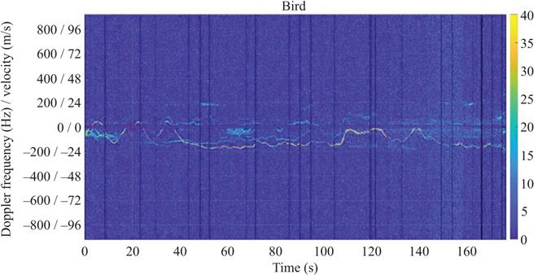
Figure I.13 Time series of Doppler profiles showing the echo history for a bird
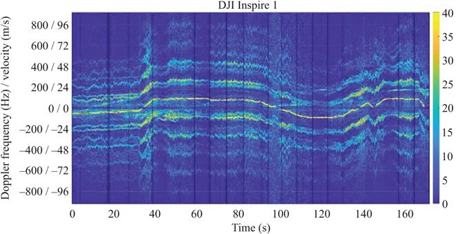
Figure I.14 Time series of Doppler profiles showing the echo history for a DJI Inspire 1
A casual glance at the two figures is sufficient to reveal very significant and obvious differences between the responses for a bird and a UAV. The multiple echoes from the propeller blades clearly stand out and can be used for classification. Indeed, it is hardly surprising that so much research has been devoted to classification approaches that exploit the returns from UAV propeller blades to provide differentiation from birds. However, the lower level of echo strength for the propeller blades can mean that the maximum detection ranges, based on the body of a UAV, may be less than the maximum classification range. As a consequence, this needs to be factored into the way in which the information can be exploited in a counter UAV or UAV surveillance system which may have to wait until a UAV is sufficiently close to correctly classify with high confidence.
It also suggests that alternative options for classification ought to be explored. At longer ranges, where, perhaps, propeller blades cannot be detected reliably, other characteristics of the trajectories can be exploited. These may be simple differentiators that filter out features such as overly strong echo strengths (indicative of large aircraft), velocities outside the range of a small UAV and zero altitude moving targets. Equally, they might be subtler characteristics, such as length of track (birds often have short flight durations as they forage for food) or differences in the ‘stability’ of the trajectories. As Figure I.13 indicates, birds typically have a more erratic trajectory than the smoother path flown by UAVs. Further, the non-rigid bodies of birds can exhibit a wider Doppler profile, especially when the bird is flapping its wings, although the widening of the propeller blade sidebands is also noted on occasion in Figure I.13. Suitable exploitation of such features can extend the maximum classification range and hence improve the effectiveness of the radar sensor.
As a direct consequence of the information contained in the echoes from birds, UAVs and other moving objects, there is clearly optimism for effective classification. Many techniques have been examined from conventional neural networks to convolutional neural networks, machine learning and statistical decision-making. The results presented in the research literature and in this book show great promise. However, there remain challenges, many of which derive from the ‘open loop’ nature of the problem. Indeed, it is a reminder that all radar performance is, in fact, a function of the scene being interrogated, although often presented as a statistical average. This is even more apparent when attempting classification. A region where there are typically large numbers of birds, such as nesting sites, will inevitably lead to more false reports than a region where birds are less commonly found. The types of birds vary from region to region and this variation may be extremely pronounced in different parts of the world. It is well known that birds are much more active in the skies at dawn and dusk and hence there can be a timing factor governing performance. All these mean that averages have to be treated with great care and that significant deviations from the average can be experienced.
The subtlety of echo characteristics might also lead to speculation that different types of birds can be differentiated from one another. The physical flight profiles of larger birds are quite different to those of smaller birds. The mating strategies of birds also differ between species and, potentially, such behaviours could be measured and analysed as a means of extending radar ornithological research. The fact that this is speculative also highlights how much we do not know about detecting and extracting reliable information from such targets. For example, the seemingly simple question, as to what frequency to use, is a case in point. There is no clear answer to this at the moment. No doubt, part of the answer will be dictated by the application, including economic factors, and part will be informed as further research improves the understanding of these phenomena.
I.3 Scope of this book
This book provides a timely and up-to-date account of the current state of the art. In Chapter 1, an overview is given of methods aimed at countering UASs. This chapter examines the range of UAVs to be countered and makes the important point that a UAS implies much more than just the flying component. There is the data link, control, human in the loop and other ancillary equipment and support elements that also have to be factored in when considering counter technologies. The chapter goes on to identify a range of surveillance sensors that might be employed as a cooperative set of interlinked systems and how they may be deployed within operational scenarios. As a result, their command and control in the form of an OODA loop has as much bearing on mission success as do the sensors themselves.
Chapter 2 examines the relationships between user requirements, affordability and system design. In particular, it highlights the inherent complexity of approach demanded by the wide variety of UAV types and possible roles they may have exacerbated by the pace at which UAVs themselves are so rapidly evolving. It then examines the role and design of radar surveillance sensors and concludes that (a) designs need to be specific to the demands of the characteristics of UAVs mentioned earlier in this introduction and (b) may require a large range of radar designs to cope with the larger and increasing range of UAV types.
In Chapters 3–8, a number of different types of radars for UAV surveillance are introduced and examined. First, in Chapter 3, the advantages of high spatial and Doppler resolutions using the mm-wave band are considered for UAV detection and classification, especially the discrimination of birds and UAVs. Most usefully the authors present a comprehensive survey of published work on mm-wave radars applied to UAV detection and classification and conclude with a review of classification methods appropriate to the application of UAV surveillance. Overall, it is shown how the mm-wave band is well suited to UAV detection and classification, provided the requirements can be satisfied with the relatively short ranges achievable.
The radar concept employed for UAV surveillance described in Chapter 4 is the one based on interferometry. The authors show how this is an approach that has much merit, particularly as micro-UAVs often perform tight manoeuvres that leave them embedded in clutter. In such circumstances, interferometry enables fine measurement in angle, such that, over time, radial range, radial range-rate, angle and angle rate can all be measured with high accuracy. After CFAR detection, this information processed using an advanced tracking algorithm to output target reports. The concept has been implemented and shown to be an effective approach both via simulation and also a hardware realisation within a laboratory environment.
The approach considered in Chapter 5 is somewhat different, exploiting radar illuminators of opportunity in a passive bistatic configuration. Specifically, the radar used is of a staring type providing continuous illumination of the area of interest. This chapter introduces the passive bistatic radar concepts and explains how this works in the case of a radar illuminator which has the advantage of an appropriately designed waveform. It goes on to describe the design and construction of an experimental implementation. The illuminator operates in L-band and targets are shown to be detected out to ranges of a few hundred metres. In this way, the viability of the approach is demonstrated, whilst acknowledging that further work is needed to move towards operationally deployable systems. The passive radar approach is also considered within Chapter 6 but this time the illuminators of opportunities are DVB-T signals. The authors begin with a system-level computation of coverage and show through detailed calculations that detection ranges of up to 8 km are possible. Then they go on to describe the detailed design of a multichannel experimental receive system and layers of processing that alleviate characteristics typical of this type of radars such as direct signal breakthrough. The inherent poor angular resolutions at DVB-T illumination frequencies are partially overcome with an antenna array and a multichannel digital receiver. The experimental results are impressive and show detections out to 5 km. It is interesting to speculate on the numbers and strength of echoes that might be received from birds at these frequencies and how the RCS of birds compares to that of the UAVs.
Chapter 7 extends the DVB-T passive radar concept to include the exploitation of multiple frequency bands. The premise being that frequency diversity offers improvements in coverage and surveillance performance, especially against UAV targets of very small radar cross section. The selected bands (DVB-T, DVB-S, WiFi, DAB, GNSS and GSM) are all at the lower end of the electro-magnetic spectrum, but as the authors point out, this offers scope for an integrated single receiver hardware architecture. Through experimentation, the authors examine the different roles that the different frequency bands might play and conclude that the more powerful DVB-T signals provide the primary surveillance function with weaker WiFi and DVB-S signals enabling higher location accuracies and therefore enhancement of tracking performance together with target characterisation, albeit at shorter ranges.
The passive radar theme continues in Chapter 8 but here the illuminators of opportunity, in the form of GNSS signals, are located in space. The resulting geometry causes some marked difference in coverage and also facilitates detection by both traditional backscattering and forward scattering. Low transmit powers means that realistic ranges are in the tens-of-metres category but coverage is universal and near continuous. The forward scatter mode of detection is shown to be more of a secondary, reinforcement, form of detection being too sporadic to be relied on for primary detection. Computations show how accurately target detections can be located in range and angle. Finally, the computations are validated experimentally and demonstrate good agreement thus establishing the complementary viability of a space-based approach.
Having examined a number of different radar surveillance sensor concepts that yield detections of UAVs, we come back to the problem of differentiating these from detections of birds that have similar echo strengths. This is the theme of the next few chapters. Chapter 9 examines the characteristics of echo signatures resulting from scattering from UAVs and birds. The chapter usefully includes a comprehensive review of the existing literature and a taxonomy of UAV types that acts as a reminder of the vast arrange of air vehicle designs that are available. The authors present a series of simulation and measurement results that highlight the variability of signatures as a function of both radar parameters and local environment. Just as importantly, they also show that the principle difference between echoes from UAVs and birds lies in the form of their micro-Doppler characteristics and that this provides an obvious basis for their differentiation.
Chapter 10 continues the theme of evaluating UAV responses to extract more information, this time to differentiate between different types of UAV. The basis of this approach is to recognise, for example, that quadcopters, with four sets of rotor blades and hexacopters, with six sets of rotor blades, are likely to generate radar micro-Doppler features that differ from one another. This generates differences that can be observable in spectrograms from which classification features can be derived. Using a laboratory level experiment with a radar operating at a transmission frequency of 25 GHz, they show that high levels of classification performance can be achieved under a variety of combinations of different UAV types. They also examine performance as a function of an SNR. This indicates that classification levels start to deteriorate as the SNR falls below 10 dBs. It is intriguing to speculate on the main micro-Doppler contributors to classification as well as the effects of key radar parameters such as the transmission frequency.
Chapter 11 deals with the specifics of classification between UAVs that may be carrying different payloads. The premise is that different weight UAVs will require different levels of power and this will affect their micro-Doppler signature as seen by radar. Equally, the differently weighted UAVs will also have different trajectory behaviours that can also be exploited by a discriminator. They use a multistatic radar to make measurements at a transmission frequency of 2.4 GHz. Spectrograms show a marked difference both monostatically and bistatically between the echoes from a UAV with and without a payload with the propeller sidebands showing less variability under loading. This allows suitable discriminating features to be extracted and applied to a classifier with excellent performance and hints at the potential for radar surveillance to provide much more than just UAV detection and tracking.
Chapter 12 describes methods of good practice and approaches to the design and development of counter UAV systems. The authors briefly describe a novel staring radar concept and show how it can be used to detect and discriminate drones against a severe background of other targets such as birds. Specifically, there is a focus on the important topic of collecting truth data from both control and from opportune targets. After all, classification inherently requires accurate truth data to validate and understand achieved performance. Examples are provided that use real-world measurements to illustrate how labelled training data can be generated and then used to demonstrate target classification performance when using a supervised-learning-based approach.
Together, the chapters that comprise this book collectively provide a detailed overview of the state of the art of approaches to the surveillance of drones using radars. Notably, a wide range of radar types are under development and examination, raising the intriguing question as to which may eventually be routinely adopted for operational use. Equally, the classification challenge is shown to be one that has yet to be fully met and there is much scope for future improvements. Certainly, the higher the drone classification accuracy couple with the greater time between false reports will inevitably increase the range of application and rate of adoption of radar. In this way, radar is set to play a key role in surveying and understanding the occupancy of low-level airspace, just as it does in managing and controlling the use of higher level airspace as used by manned aircraft.
Bibliography
[1] Johnson W., “Helicopter Theory”, Dover Publications, New York, NY, USA, 1980 ISBN: 0-486-68230-07.
[2] Nonami K., “Prospect and recent research and development for civil use autonomous unmanned aircraft as UAV and MAV”, Journal of System Design and Dynamics, 1(2), pp. 120–128, 2007.
[3] Ninghao Y., Tuian L., Beibei Z. and Nan L., “A review: UAV-based remote sensing”, IoP Conference Series: Materials and Science Engineering, 490, pp. 1–6, 2019.
[4] Sullivan J.M., “Evolution or revolution? The rise of UAVs”, IEEE Technology and Society Magazine, pp. 43–49, 2006.
[5] Prisacariu V., “The history and the evolution of UAVs from the beginning till the 70s”, Journal of Defence Resources Management, 1, pp. 181–189, 2017.
[6] Luo Y. and Fan H., “The development and application of China military UAV”, International Conference on Advanced Electrical, Mechatronics and Computer Engineering, pp. 145–148, 2019.
[7] Palik M. and Nagy M., “Brief history of UAV development”, Repüléstudományi Közlemények, 31(1), pp. 155–166, 2019.
[8] Cai G., Chen B.M. and Lee T.H., “An overview on development of miniature unmanned rotorcraft systems”, Frontiers of Electrical and Electronic Engineering in China, 5, pp. 1–14, 2010.
[9] Keane J.F. and Carr S.S., “A brief history of early unmanned aircraft”, John Hopkins APL Technical Digest, 32(3), pp. 558–571, 2013.
[10] Newcome L.R., “Unmanned Aviation: A Brief History of Unmanned Aviation Vehicles”, American Institute for Aeronautics and Astronautics, 2004 ISBN: 978-1-56347-644-0.
[11] Fahlstrom P.G. and Gleason T.J., “Introduction to UAV Systems”, John Wiley and Sons, West Sussex, UK, 2012 ISBN: 978-1-119-97866-4.
[12] de Wit J.J.M, Harmanny R.I.A. and Premel-Cabic G., “Micro-Doppler analysis of small UAVs”, Radar Conference (EuRAD), 2012 European, pp. 210–213, Oct 2012.
[13] Molchanov P., Harmanny R.I.A., de Wit J.J.M., Egiazarian K. and Astola J., “Classification of small UAVs and birds by micro-Doppler signatures”, EuRad Conference, Nuremberg, Germany, pp. 172–175, Oct 2013.
[14] Clemente C., Balleri A., Woodbridge K. and Soraghan J., “Developments in target micro-Doppler signatures analysis: radar imaging, ultrasound and through-the-wall radar”, EURASIP Journal on Advances in Signal Processing, 2013 (1), p. 47, 2013.
[15] Harman, S.A., “Comparison of staring radars with scanning radars for UAV detection”, EuRad 2015, France, pp. 185–188, Sep 2015.
[16] Jahangir, M., “Target centric wide-area 3-D surveillance using a non-scanning multibeam receiver array”, IEEE RadarCon 2015, Arlington, VA, USA, May 2015.
[17] Ritchie M., Fioranelli F. and Griffths H., “Micro-drone RCS analysis”, Proc. of IEEE Radar Conference, Johannesburg, South Africa, pp. 452–456, Oct 2015.
[18] Ritchie M., Fioranelli F., Griffths H. and Torvik, B., “Monostatic and bistatic radar measurements of birds and micro-drone”, IEEE Radar 2016, Philadelphia, PA, US, pp. 1–6, May 2016.
[19] Jahangir, M. and Baker, C., “Persistence surveillance of difficult to detect micro-drones with L-band holographic radar”, CIE 2016 Int. Radar Conf., Guangzhou, China, Oct 2016.
[20] Poitevin P., Pelletier M. and Lamontagne P., “Challenges in detecting UAS with radar”, 2017 International Carnahan Conference on Security Technology (ICCST), pp. 1–6, Oct 2017.
[21] Vaugh C.R., “Birds and insects as radar targets: a review”, Proceedings of the IEEE, 73(2), pp. 205–227, 1985.
[22] Torvik B., Olsen K.E. and Griffiths, H.D., “X-band measurements of radar signatures of large sea birds”, IEEE International Conference on Radar, pp. 1–6, Oct 2014.
[23] Rahman S. and Robertson D.A., “In flight RCS measurements of drones and birds at K-band and W-band”, IET Radar, Sonar and Navigation, pp. 300–309, 2019.
1School of Engineering, University of Birmingham, Birmingham, United Kingdom